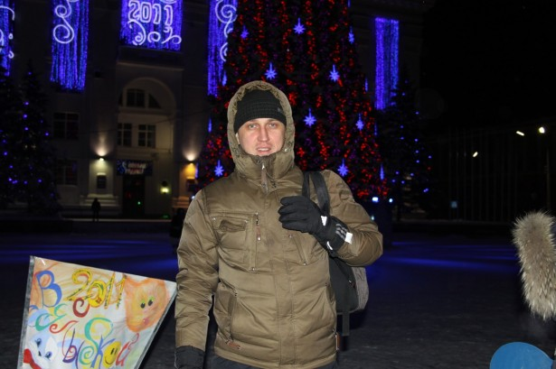
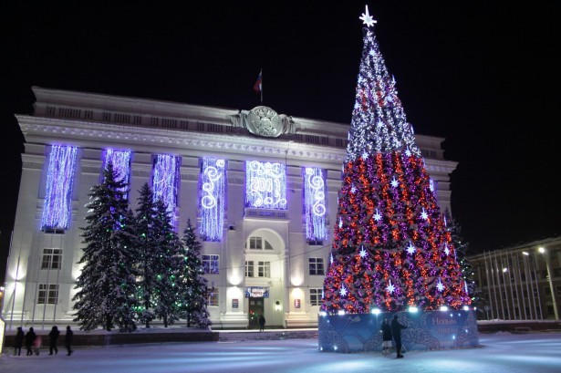
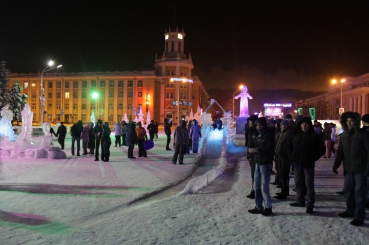
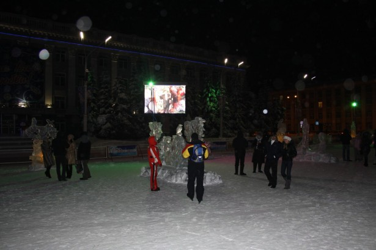
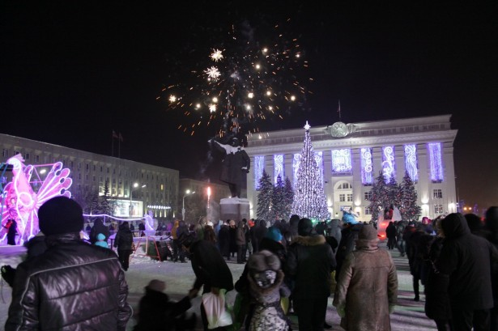

2011 год решили встретить не так, как встречали несколько предыдущих лет.
Сидение за столом в ожидании речи президента, который наверняка говорил, что год был «трудный и сложный для нас, но…» и «у нас великая страна», было решено заменить на мороз и солнце ёлку на площади Советов. Единомышленников в кругу друзей особо не проявилось, поэтому в 23:30, взяв в руки ледянки, рюкзак с бутылкой шампанского, соком и мандаринами всей семьей сели в машину и поехали в центр города.

Стоянка на Советском была закрыта, а вот стоянка рядом с «экономом» КемГУ почти до отказа была набита машинами, что, конечно, порадовало.

Несмотря на мороз около -25°С, на площади Советов в Кемерово было довольно многолюдно. Практику возведения высоких (с трехэтажный дом) горок прекратили вроде еще в прошлом году, хотя еще несколько лет назад на площадь Советов специально свозили КамАЗами снег. Огромные горки были тогда даже полностью снежными. Но то ли бюджеты не те, то ли просто окультуриваемся потихоньку — горок, на которых подвыпившие взрослые могли бы сломать себе ключицу или нос в этом году на площади нет.

Зато есть красивый ледяной городок, который в сочетании с разноцветными подсветками хоть и выглядит конечно местечково, но праздничное настроение создает.
За несколько минут до начала нового десятилетия с экрана, установленного на площади поздравил горожан епископ Аристарх, потом совсем ненадолго на экране появился мэр Кемерова Владимир Михайлов, с традиционно долгой речью выступил Губернатор Аман Тулеев и, наконец, президент Дмитрий Медведев завершил череду поздравлений. Нормального звука все равно не было. Может провода замерзли, может проводники, но без звука было даже лучше.

Когда стрелки на почтамте и на экране показали полночь вся площадь начала открывать шампанское выпивать и ликовать. А минут через 5 начался красивый, по-настоящему новогодний праздничный салют. Причем это не было хаотичный запуск фейерверков с разных точек площади. Это был именно праздничный городской новогодний салют, который в зимнем морозном темном небе смотрится не менее эффектно, чем летние салюты на день Победы или день города.

Ближе к часу площадь потихоньку начала пустеть, а мы, сделав круг по новогоднему городу поехали продолжать праздник к друзьям.